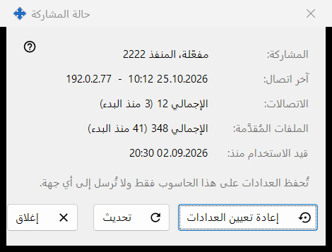
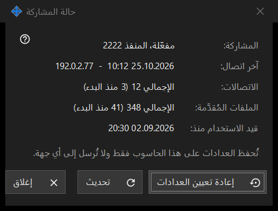

حالة المشاركة
الغرض من هذه النافذة
تعرض الحالة الحالية للمشاركة وعدّاداتها البسيطة. تُفتح من رابط الإحصائيات في النافذة الرئيسية.


بهذا الترتيب
- اقرأ الحالة في الأعلى.
- تحقّق من آخر اتصال وعدد الاتصالات والملفات المُقدَّمة.
- اضغط تحديث للحصول على قيم جديدة.
- اضغط إعادة تعيين العدادات لبدء العدّ من جديد.
- اضغط إغلاق.
عناصر النافذة
الحالة
المشاركة: توضح هل المشاركة قيد التشغيل وعلى أي منفذ، أو أنها متوقفة، أو أن العامل غير متاح. قيد الاستخدام منذ: يعرض وقت بدء المشاركة.
العدّادات
آخر اتصال: يعرض وقت آخر هاتف، أو لم يحدث بعد. الاتصالات: والملفات المُقدَّمة: تعرضان الإجمالي وبين قوسين العدد منذ آخر بدء. تُحفظ العدّادات على هذا الكمبيوتر فقط ولا تُرسل إلى أي مكان.
التحديث وإعادة التعيين
تحديث يقرأ القيم من الخادم مرة أخرى. إعادة تعيين العدادات تسأل أولاً: لا يمكن استعادة القيم السابقة. إذا فشلت إعادة التعيين يعرض الزر فشلت إعادة التعيين. إغلاق يغادر النافذة.